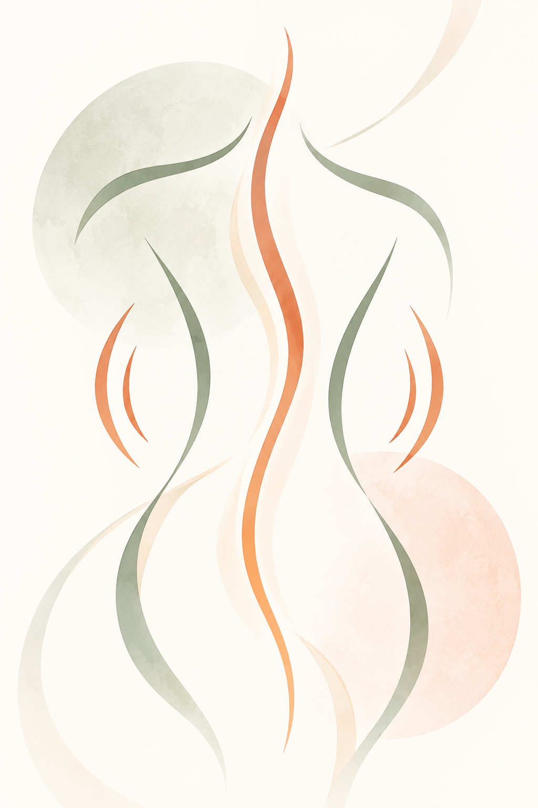
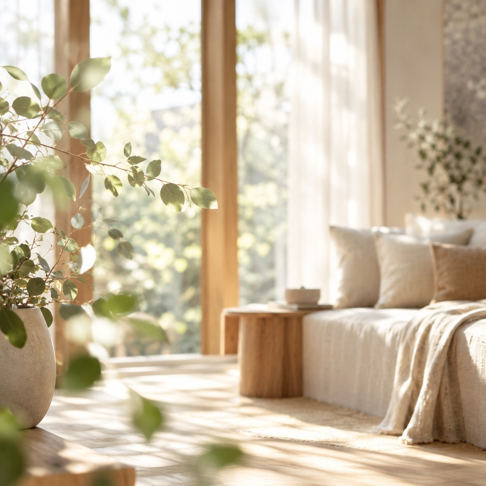
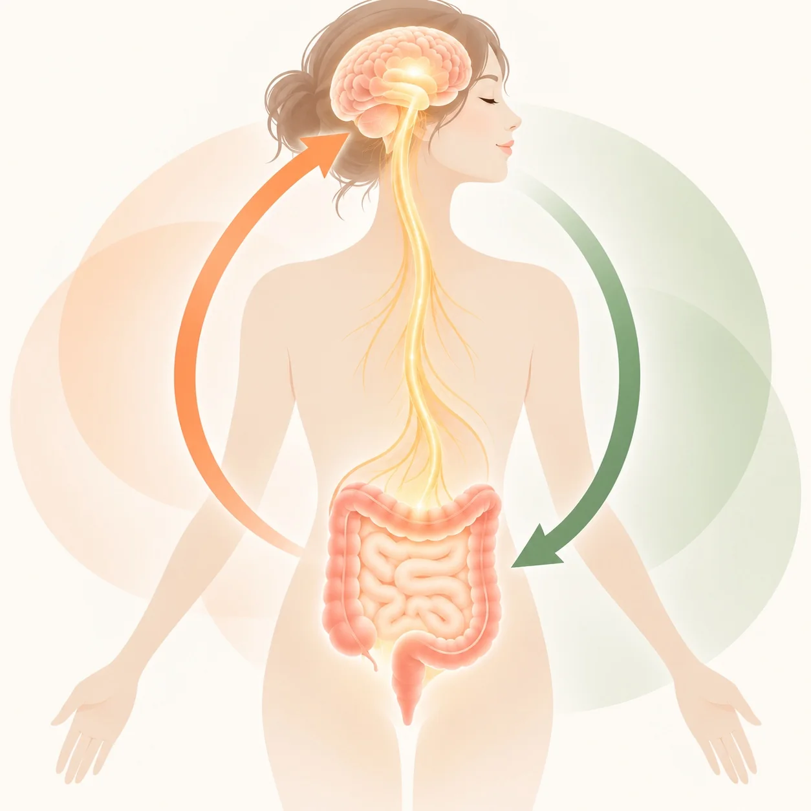
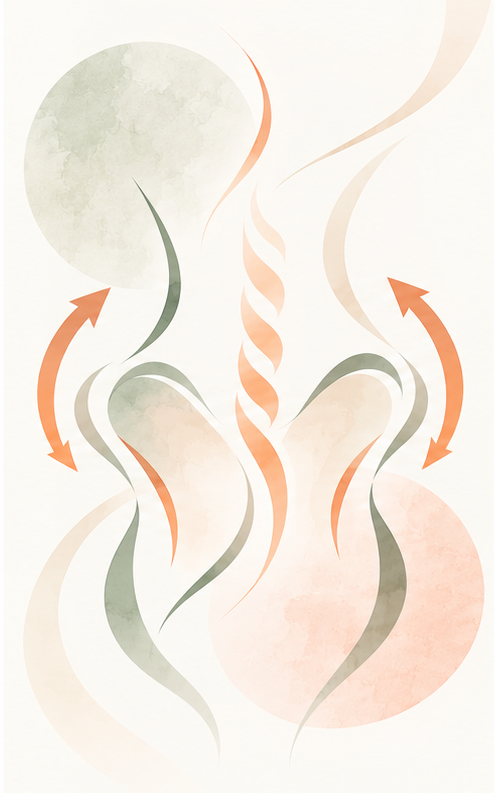
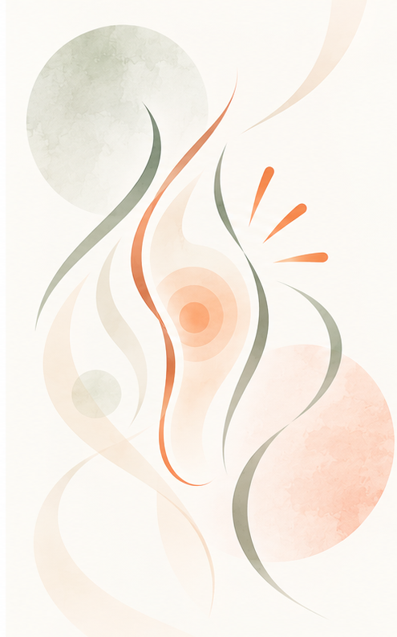
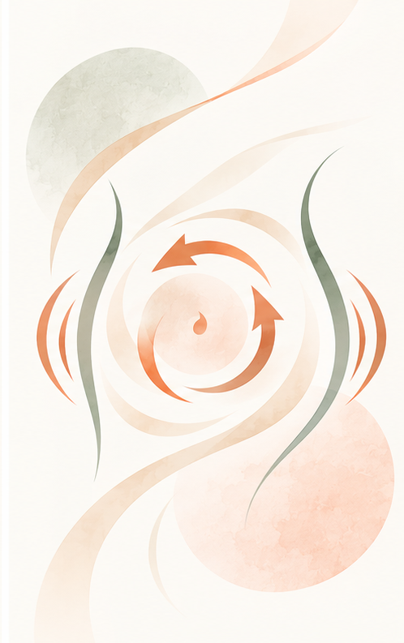
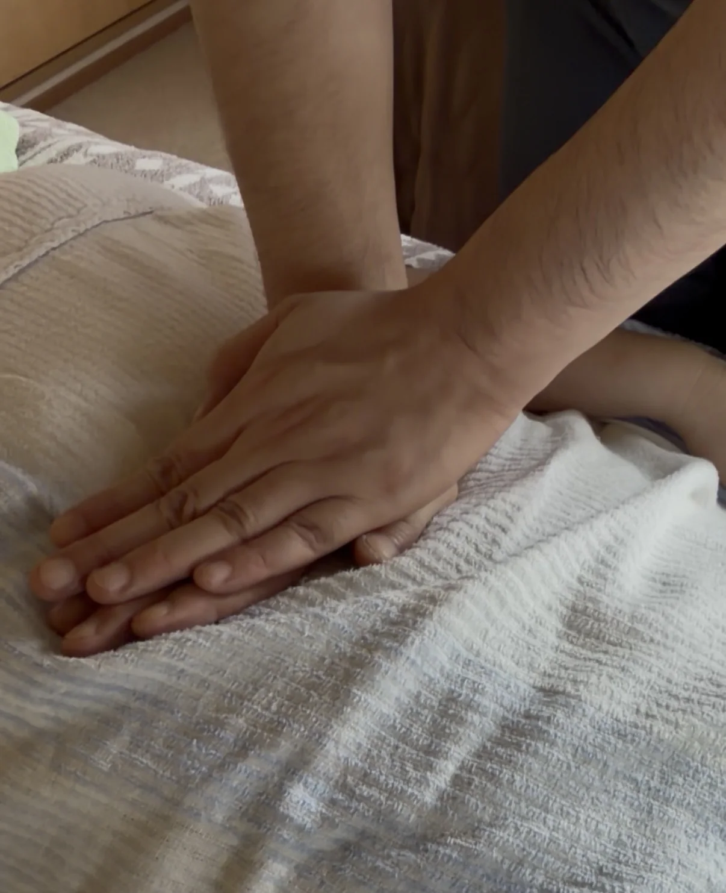
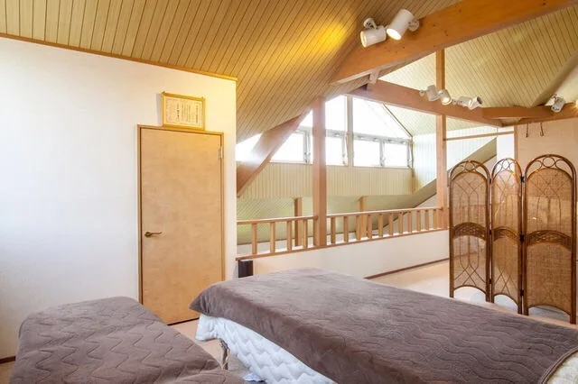

01
まずは全身から
検査・全体調整
身体の緊張を見ながら、全身をゆるめ、脳と腸のつながりを意識した土台づくりをします。


お腹から、今日の自分を大切に。THE SIGNS
お腹のことが気になるとき、身体のほかの部分にも変化を感じていませんか。

OUR APPROACH
腸のことを考えるとき、あまゆびは骨格・神経・循環、そして脳と腸のつながりにも目を向けます。緊張している日も、疲れが抜けない日も、まずは全身の状態を確かめるところから。
お腹を強く押して変化を急ぐのではなく、その日の身体に合わせて施術します。
FROM THE WHOLE BODY
お腹へ向かう前に、
全身のめぐりを。
THE 90-MINUTE SESSION
いきなりお腹には触れません。全身から足元までを確かめ、最後にお腹へ進みます。
まずは全身から
身体の緊張を見ながら、全身をゆるめ、脳と腸のつながりを意識した土台づくりをします。


お腹の土台へ
骨盤まわりの状態を見ながら、身体のバランスを整えていきます。
足元から全身へ
足裏から全身へと働きかけます。お腹だけで完結させない、あまゆびの施術の一部です。


最後に、やさしく
全身を整えたあと、お腹の状態に合わせて直接アプローチ。心地よさを確かめながら進めます。

あまゆびの施術風景A REAL MOMENT
実際の施術では、その日の身体の状態を確かめながら進めます。力を抜いて過ごせる90分を大切にしています。

まずは今日、ゆっくり力を抜く時間を。身体の変化の感じ方には個人差があります。無理な即効性を追わず、その日の状態に合わせた施術を重ねていきます。
RESERVATION
気になることがあれば、ご予約前にもお気軽にお問い合わせください。
あまゆび
循環腸セラピー
公式LINE：https://lin.ee/rwDTbpC
電話：0277-40-2611